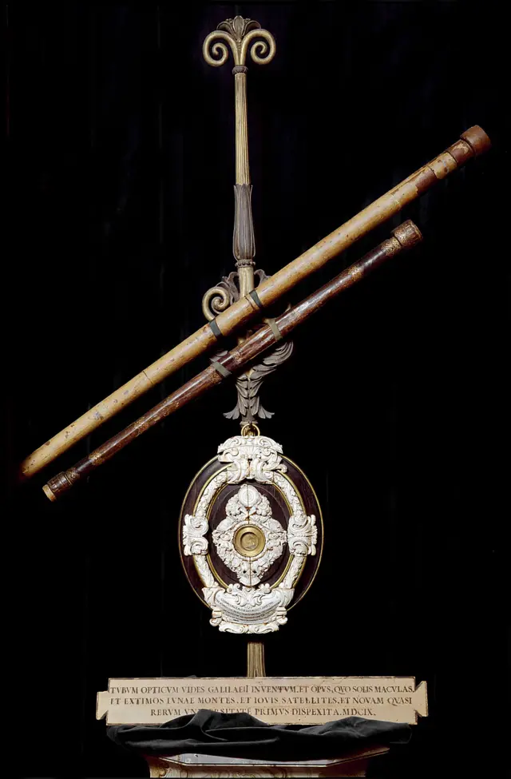
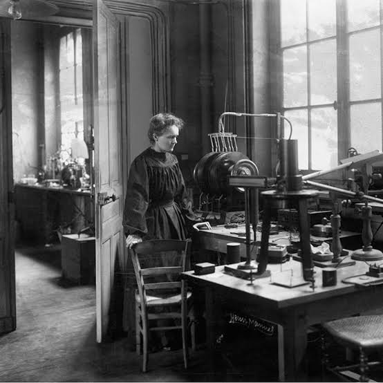
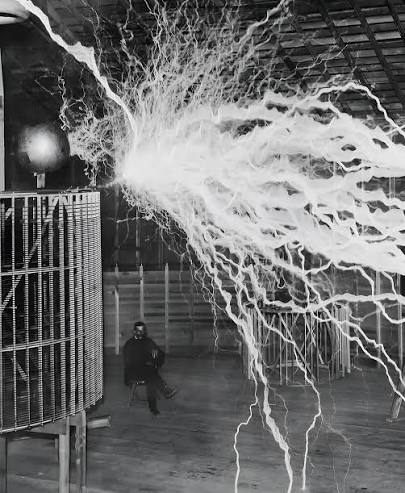
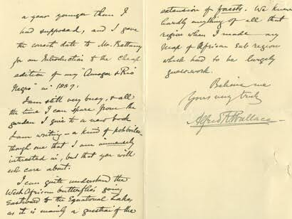
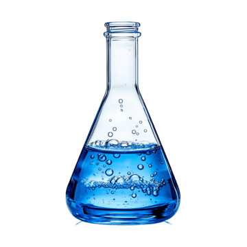
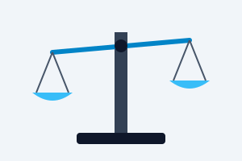
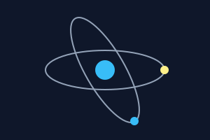
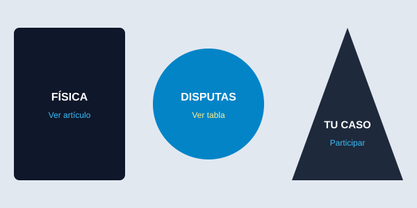

Archivo gráfico y audiovisual de curiosidades científicas
Galería de protagonistas, instrumentos y esquemas
Selección de nueve piezas visuales en distintos formatos optimizados según su naturaleza (fotografía, transparencia y gráficos vectoriales).







Mapa interactivo de secciones del archivo
Haz clic sobre cada una de las tres figuras geométricas (rectángulo, círculo o triángulo) para navegar directamente a su sección correspondiente:

Vídeo documental y cápsulas sonoras locales
Vídeo: Crónica breve de errores famosos en el laboratorio
Descripción del vídeo: Resumen visual sobre descubrimientos accidentales como la penicilina de Alexander Fleming, con pistas de subtítulos activables en español e inglés.
Recursos audiovisuales y localización externa
Documental externo en YouTube
Si el reproductor incrustado no carga, puedes ver el contenido directamente en YouTube: vídeo de divulgación científica .